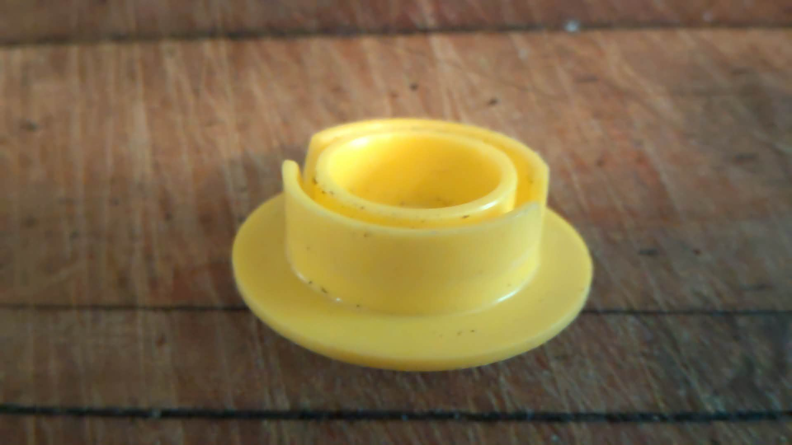
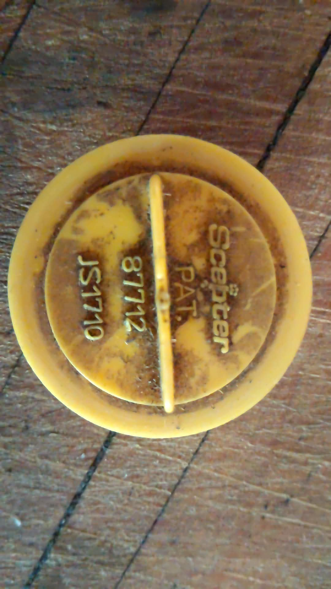

Scanned your photos with the vision model and read the molded markings: "SCEPTER · PAT. 87712 · JS1710" — and the best news: a free 3D-printable file for this exact cap already exists.


Two free models on Printables, including one made for the JS1710 Scepter jerry cans (the Cabela's 20L military cans).
"Scepter 8499 Stopper Cap for JS1710 Cabela's Jerry Cans" by riceroll — 140+ downloads, made by someone who lost the same cap camping.
"Scepter Water Jerry Can Cap 25mm hole" — the companion cap for Scepter water cans, also free.
↗ View on PrintablesScepter is a Canadian company (Toronto) and their jerry can parts are widely stocked. The cap itself is a small molded part, so replacement caps are inexpensive — usually around $5–$15 CAD depending on the exact part.
Prices vary by store and part number — the range above is typical for Scepter small replacement parts. Tell them the numbers on your cap (PAT 87712 / JS1710) and they'll find it instantly.
You have three routes, cheapest first: (1) Print it for free — the JS1710 STL exists and is proven, (2) Buy a genuine Scepter cap for ~$5–15 from any Scepter retailer, or (3) print a spare AND keep the original. If you want, I can download the STL and check the model against your cap's measurements (a rough sanity check) — just say the word.